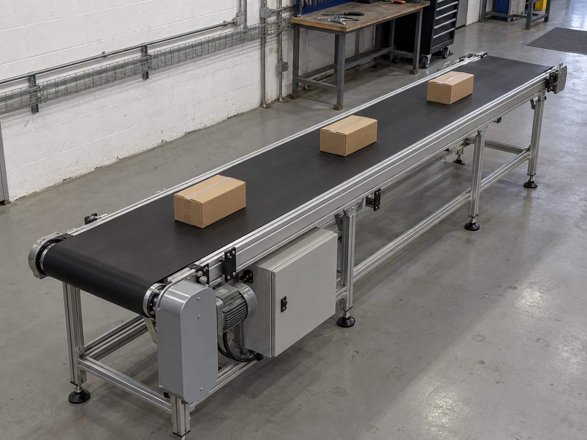
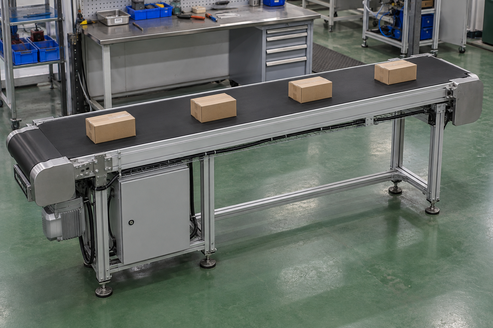

lr_101

掉电后已经来电，输送带仍没动。请核对本段记录并判断后续是否需要处理。
合成工位输入；无答案预览。14份测试不在此页展开。ZIP为本地可重建文件；这是数据预览，不是Agent运行结果。
掉电后已经来电，输送带仍没动。请核对本段记录并判断后续是否需要处理。

输送段中途停止，控制柜比平时热。请对照资料，核对停机和可采取的处理。

先前发生过掉电，操作人员还登记过检查工作。请确认当前能否恢复生产。

输送段保护暂停，部分采集通道没有导出。请区分能够确认的情况与待核实事项。

当前工位等待下一批任务。请核对停顿记录，判断有没有需要处置的情况。

班组已对停机工位做过散热处理，当前仍未恢复。请结合本次记录判断进展。

工位短时停电后保持停止。请核对状态，并以最新工具反馈判断下一步。

输送段停止且柜温升高，请检查是否可以处理，并核验处理反馈。

本次停顿附近的采集不完整，原因尚未登记。请核对现有资料，必要时请求补充。

同一时段出现过控制柜温度告警和短时掉电，来电后输送仍停止。请核对事件顺序。